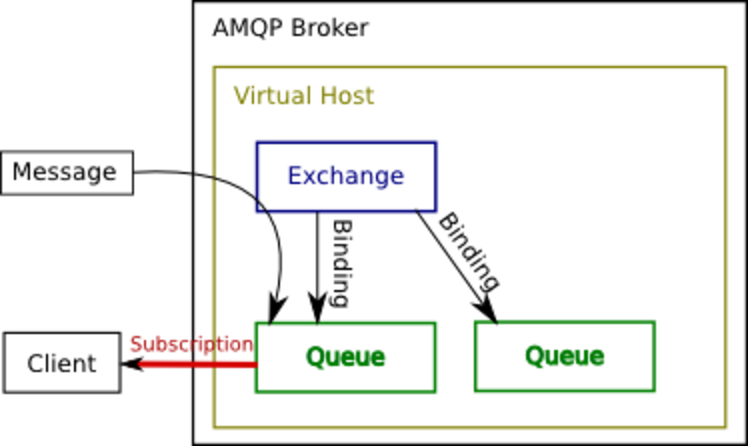

class: center, middle # Applikationen entkoppeln mit RabbitMQ Moritz Lenz --- # Ziele * Aufgaben asynchron abarbeiten * ... über Sprach- und Host-Grenzen hinweg * Separation of Concerns: Quellanwendung muss nicht die Adresse(n) der Zielanwendung kennen * ... --- ## Mehr Ziele * Abbildung von 1:N Kommunikationswegen * Zwischenspeichern von Nachrichten (Queueing) * Überbrücken von Netzwerktoplogien * Load Balancing --- # Lösung: Message Broker und Queue * Quellanwendung schickt Nachricht an den Message Broker * Zielanwendung lauscht an Queue(s), verarbeitet eingehende Nachrichten --- # Kommunikationsmodell AMQP  --- # Analogie E-Mail * AMQP Message ⬄ E-Mail * Queue ⬄ Mailbox * Routing key ⬄ localpart der E-Mail-Adresse * Exchange-Name ⬄ Domain der E-Mail-Adresse * Exchange-Instanz ⬄ laufender MTA * Binding ⬄ Eintrag in der Routing-Tabelle --- ## Unterschiede E-Mail * Latenzen im ms-Bereich * Zentral gemanagtes System (Cluster möglich) * Koherentere Spezifikation --- ## AMQP * AMQP: Advanced Message Queuing Protocol * AMQP 0.9: Definiertes Kommunikationsmodell * AMQP 1.0: Aufgeweichte Definition * Ähnliche Protokolle: STOMP, MQTT, XMPP, OpenWire * Implementierungen: RabbitMQ, Qpid, ActiveMQ, Joram --- ## AMQP: Eigenschaften, Paradigmen * Header: Routing-Queue, Exchange, TTL etc. * Body: Transparent für den Broker * Queues, Bindings, Exchanges vor Benutzung deklarieren * deklarieren: erzeugen, fall es noch nicht existiert (idempotent) * Channel: Virtuelle Verbindungen innerhalb einer TCP-Verbindung --- ## Installation RabbitMQ ``` $ apt-get install -y rabbitmq-server $ rabbitmq-plugins enable rabbitmq_management ``` Danach Web-Interface auf http://127.0.0.1:15672/ (`guest`/`guest`). Administration über Commandozeile `rabbitmqctl` oder Web-Interface (TLS für AMQP und Management-Interface verfügbar) ([Limit file descriptors erhöhen](https://www.rabbitmq.com/install-debian.html)) --- class: center, middle # (Live-Demo Web-Interface) --- # Benutzung aus Perl (`Net::RabbitMQ`) ```perl use Net::RabbitMQ; my $mq = Net::RabbitMQ->new(); $mq->connect("localhost", { user => "experiments", password => "experiments", vhost => '/experiments', }); $mq->channel_open(1); ``` --- ## Benutzung aus Perl (cont.) ```perl $mq->exchange_declare(1, 'catchall', { exchange_type => 'topic', passive => 0, durable => 1, auto_delete => 0, }); $mq->queue_declare(1, 'routing-key-a', { passive => 0, durable => 1, exclusive => 0, auto_delete => 0, }); $mq->queue_bind(1, 'routing-key-a', 'catchall', 'a'); ``` --- ## Consumer ```perl while (my $message = $mq->get(1, 'routing-key-a')) { print Dumper $message; } ``` --- ## Producer ```perl $mq->publish(1, # channel, 'a', # routing key 'Dies ist die Payload', # payload { exchange => 'catchall', }, { content_type => 'text/plain', content_encoding => 'ASCII', message_id => "made-up-1", app_id => $0, user_id => 'experiments', timestamp => time, }, ); ``` --- # Routing-Keys * Freitext * Typischerweise Punkt-getrennt, hierarchisch aufgebaut * Beispiel: `nnis.business.default.query.hardware.list` * Aufbau: Konstanter Prefix, Applikation, Instance, Message-Klasse, Objekt, Verb --- ## Berechtigungen * Separate Regexes für Lesen, Schreiben, deklarieren * ... pro User und Virtual Host * "Tags" für weitere Berechtigungen (z.B. Zugang zum Admin-Frontend, "impersonator" etc. ) --- # Queues: Persistenz vs. Durability * **persistent** Queues: Nachrichten werden auf Festplatte geschrieben, überleben Absturz des Servers * **durable**: Meta-Information (Name, TTL, ...) wird auf Platte geschrieben * Transaktionen und Acknowledgements möglich --- # Exchanges * **Direct**: 1:1-Matching des Routing Keys * **Topic**: Matching des Routing Keys mit Wildcards `*` und `#` * **Fanout**: Nachrichten gehen an verbundenen Queues * **Header**: Matching anhand beliebiger Header --- # Warten auf Antworten * Queue ohne Namen generieren => wird automatisch vergeben. Als `auto_delete` markiere * Queue als Antwort-Adresse mitgeben * Auf der Queue lauschen * Korrelations-ID mitschicken --- # Clustering * HA: Queues repliziere * Sharding: Jede Queue lebt auf einem Server * Federeation/Shovel: Bestimmte Exchanges an andere RabbitMQ-Instanz schicken